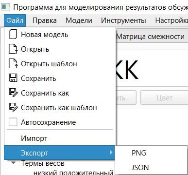
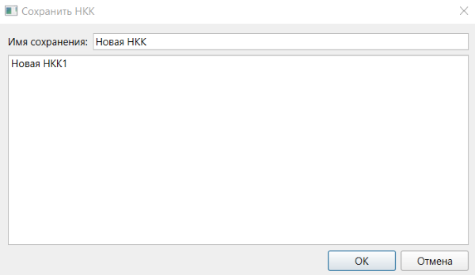
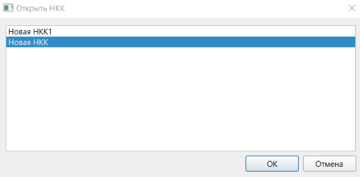
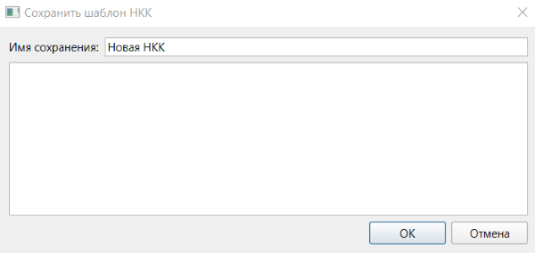
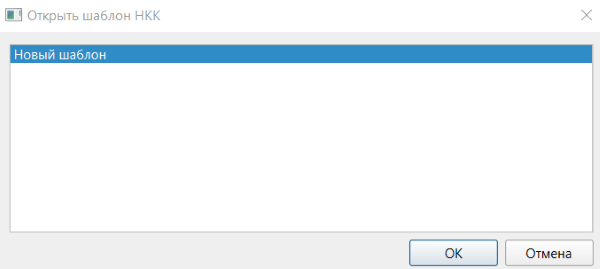
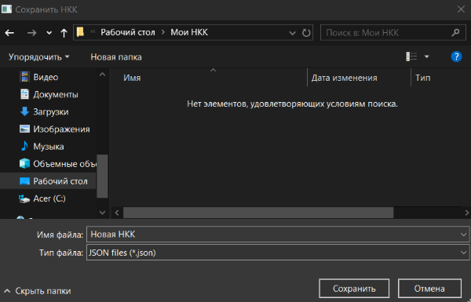
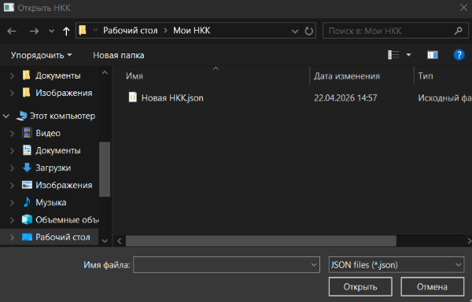

1. Saving, importing, and exporting are handled through the "File" menu.
2. Saving a model:
2.1. To save a model that has not been saved before, choose "Save" or "Save as". This opens the model save window.

2.2. This window lists the names of all saved models. If you double-click a saved model, its name is inserted into the "Save name" field. Clicking "Cancel" closes the window. Clicking "OK" saves the model under the name specified in the "Save name" field. The current model title is changed as well.

2.3. If the current model has already been saved, choose "Save as" to save its current state under a different name. In this case, the window works in the same way as described in item 2.2.
2.4. If the current model has already been saved, its current save can be updated using the "Save" command.
2.5. If the "Autosave" flag is enabled, the current saved state is updated whenever a term, concept, weight, model title, model notes, experiment list, or forecasting parameter is changed.
2.6. To load a model, choose "Open". This opens the model open window. In this window, the user can select a model from the saved models. Clicking "OK" opens the selected model. Clicking "Cancel" closes the window without applying changes.

2.7. The keyboard shortcut for "Save" is "Ctrl + S". The shortcut for "Save as" is "Ctrl + Shift + S". The shortcut for "Open" is "Ctrl + O".
3. Saving templates:
3.1. A template is a model without specified concept values, weight values, or forecasting parameters. Templates are intended to let several experts conveniently provide estimates for these values.
3.2. To save the current model as a template, choose "Save as template" from the "File" menu. This opens the template save window. Its interface is completely identical to the model save window except for the title. Work with this window is also the same as described in item 2.2, but applied to templates.

3.3. To load a template as a new model, choose "Open template" from the "File" menu. This opens the template open window. Its interface is completely identical to the model open window except for the title. Work with this window is also the same as described in item 2.6, but applied to templates.

4. Exporting and importing JSON:
4.1. To export to JSON, choose "Export" from the "File" menu and then select JSON. The operating system will then ask for the full name of the file to which the export should be written. By default, the suggested file name is the name of the exported model. After clicking "Save", the export is performed.

4.2. To import from JSON, choose "Import" from the "File" menu. The operating system will then ask for the full name of the file from which the import should be performed. After clicking "Open", the import is performed.

5. Exporting to PNG saves the current state of the interactive area on the graph tab, taking the current zoom and offset into account, into a PNG file. This export is performed through the "PNG" item of the "Export" submenu in the "File" menu, similarly to JSON export.